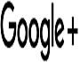

Ce ar presupune o retea de socializare?
O retea de socializare este, general vorbind, o retea de persoane cu scopuri comune, cum ar fi o retea de studenti, in contrast cu retelele tehnice ca reteaua de telefon sau internet. In ultimii ani printr-o retea sociala se intelege deseori si o retea (informationala) de utilizatori Internet, bazata pe anumite site-uri web la care utilizatorii se pot inscrie si interactiona cu alti utilizatori, deja inscrisi. Aceste retele sociale fac parte din fenomenul relativ nou, global, numit Web 2.0. Astfel, membrii unei retele sociale sunt legati intre ei in mod informal, fara obligatii, dar de obicei contribuie activ la colectarea si raspandirea informa?iilor pe intregul glob prin intermediul webului. Eventual denumirea unei astfel de retele (informationale) de utilizatori s-ar putea echivala cu "retea internetica de utilizatori".Cele mai cunoscute retele de socializare
| Denumirea | Flickr | Linkedln | YouTube | |||||
|---|---|---|---|---|---|---|---|---|
| Anul lansarii | 2004 | 2002 | 1998 | 2010 | 2011 | 1984 | 2005 | 2011 |
| Nr. de utilizatori | 1.44 mlrd. | 32 mln. | 238 mln. | 100 mln. | 70 mln. | 336 mln. | 1 mlrd. | 180 mln. |
| Logotip |  |  | ||||||
| Descriere | Foto,Video, Mesaje,Chat | Imagini si fotografii | Managementul carierei | Poze,Note, Video(1 min) | Informatii si documente | Mesaje scurte (140 caractere) | Videoclipuri | Informatii, poze,video |
Teme de discutie
- Fotografii
- Muzica
- Filme,video
- Jocuri video
- Cunosti oameni noi,colaborezi usor
Avantaje
Retele sociale au multe avantaje iar faptul ca sunt atat de populare sunt un argument solid. Ele ne ajuta sa tinem legatura cu prieteni sau colegi de liceu/facultate, cum este cazul Facebook. Sa ne gasim o relatie cum este cazul Bree.ro sau sa ne gasim un job mai bun sa cum este cazul Linkedin. Linkedin are peste 200 milioane de persoane la nivel mondial, printre care personal de la resurse umane sau manageri. Pe aceasta retea profilul dvs este defapt un cv online, pe care puteti sa-l actualizati mereu cu recomandari de la alte persoane de la vechiurile joburi. Platforma incurajeaza utilizatorii sa se conecteze cu alte persoane de la ei din organizatie sau cu cei din acelasi domeniu. Twitter este o alta retea sociala foarte populara. Este folosita de multi jurnalisti sau actori celebri si poate fi o sursa buna de informare in timp real deoarece informatii circula foarte repede.
Dezavantaje
La capitolul dezavantaje, putem spune ca multa lume nu este constienta de eficienta acestor retele sociale si le folosesc doar pentru a pierde timpul. Nu amestecati profilul personal cu cel al firmei sau afacerii dvs deoarece nu veti obtine rezultele scontate. Daca folosesti retele sociale pentru interes de business trebuie ca profilul sa fie atragator si actualizat des. O alta capcana a retelelor sociale este ca dau dependenta. Nu veti realiza cand zboara timpul deoarece este mereu ceva nou pe wall si veti dori sa fiti mereu online. Deoarece exista tendinta sa postati tot ce faceti pe retele sociale nu va mai puteti bucura de intimitate, toata lumea va sti mereu ce faceti si uneori asta poate fi un dezavanaj.